Front Seat Assembly RH (Manual Seat Type) Reassembly |
| 1. Install Front Seat Cushion Shield Lower LH |
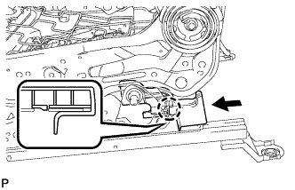 |
Slide the front seat cushion shield LWR LH in the direction of the arrow shown in the illustration, and install it by engaging the claws.
| 2. Install Front Seat Cushion Shield Lower RH |
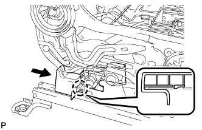 |
Slide the front seat cushion shield LWR RH in the direction of the arrow shown in the illustration, and install it by engaging the claws.
| 3. Install Reclining Adjuster Inside Cover LH |
 |
Install the reclining adjuster inside cover LH with the screw.
| 4. Install Reclining Adjuster Inside Cover LH |
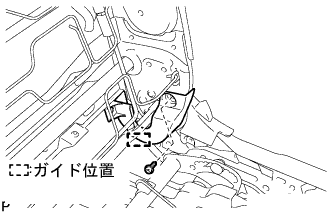 |
Insert the guide.
Install the reclining adjuster inside cover LH with the screw.
| 5. Install Reclining Adjuster Inside Cover RH |
 |
Install the reclining adjuster inside cover RH with the screw.
| 6. Install Reclining Adjuster Inside Cover RH |
 |
Insert the guide.
Install the reclining adjuster inside cover LH with the screw.
Install the clamp.
| 7. Install Separate Type Front Seatback Cover RH |
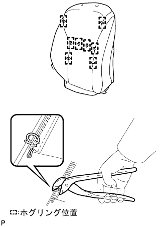 |
Using hog ring pliers, install the separate type front seatback cover RH with 8 new hog rings.
| 8. Install Separate Type Front Seatback Cover with Pad |
Temporarily install the separate type front seatback cover with pad to the front seat frame & adjuster RH.
 |
Engage the 4 claws to install the 2 front seat headrest supports.
 |
Install the bracket of the separate type front seatback cover RH with the nut.
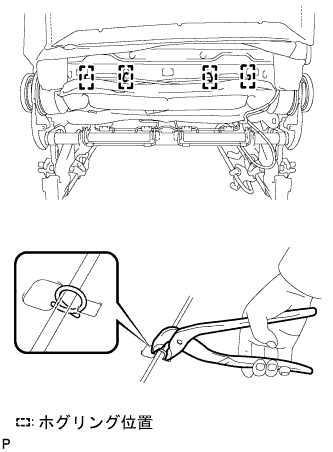 |
Using hog ring pliers, install 4 new hog rings.
 |
Using hog ring pliers, install the separate type front seatback cover RH with 3 new hog rings.
| 9. Install Separate Type Front Seat Cushion Cover RH |
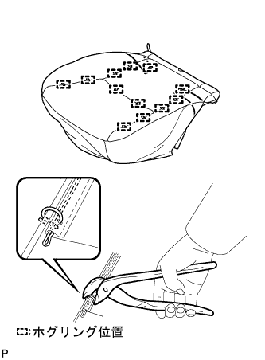 |
Using hog ring pliers, install the separate type front seat cushion cover RH with 12 new hog rings.
| 10. Install Separate Type Front Seat Cushion Cover with Pad |
Temporarily install the separate type front seat cushion cover with pad to the front seat frame & adjuster RH.
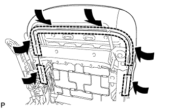 |
Attach each J-hook.
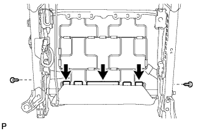 |
Install the separate type front seat cushion cover with pad with the 3 J-hooks and 2 clips.
| 11. Install Front Seat Cushion Shield Inner RH |
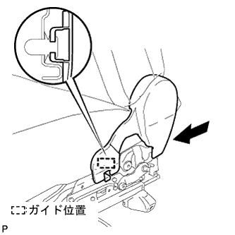 |
Slide the front seat cushion shield INN RH in the direction of the arrow shown in the illustration, and insert the guide into the clip.
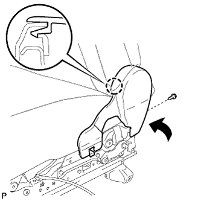 |
Engage the claws from the direction of the arrow shown in the illustration, and install the front seat cushion shield INN RH.
Install the screw.
| 12. Install Front Seat Inner Belt Assembly RH |
 |
Install the front seat inner belt assembly RH with the nut.
Engage each clamp and connect the connector.
| 13. Install Front Seat Cushion Shield RH |
 |
Insert the 2 guides.
Engage the claws.
Install the front seat cushion shield RH with the 2 screws.
| 14. Install Vertical Adjuster Handle RH |
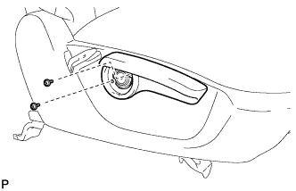 |
Install the vertical adjuster handle RH with the 2 screws.
| 15. Install Vertical Adjuster Cover RH |
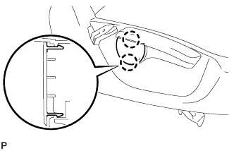 |
Engage the 2 claws and install the vertical adjuster cover RH.
| 16. Install Reclining Adjuster Release Handle RH |
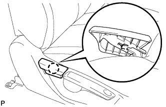 |
Engage the claws to install the reclining adjuster release handle RH.
| 17. Install Front Seat Under Tray (w/ Seat Under Tray) |
 |
Engage the 2 guides and install the seat under tray. (Front passenger side only)